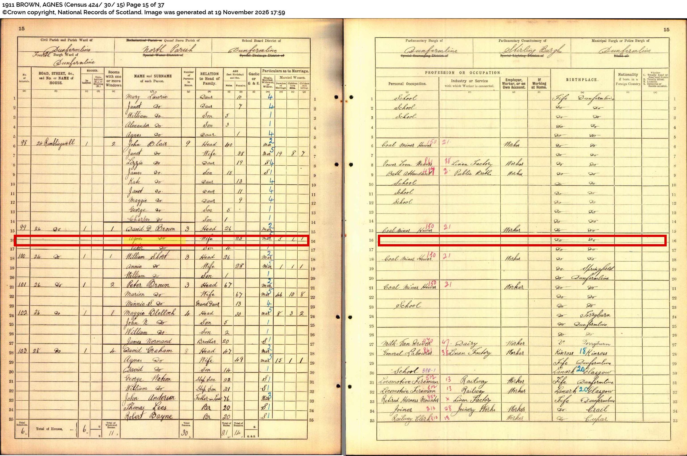

1911 census: Agnes Brown, Dunfermline
Census of Scotland, 1911, Dunfermline (424/30 p. 15). National Records of Scotland.

The entry is boxed in red and the names are highlighted. See the full page.
What it says
- Agnes Brown, 25, wife of David D. Brown, coal miner, with a son, Peter.
Why it was checked
Checked while looking for Laurence's mother on census night, April 2, 1911. This Agnes was already a married woman; Laurence's mother was a spinster when she married in August 1911. Not her.
Crown copyright, National Records of Scotland. Image from ScotlandsPeople.